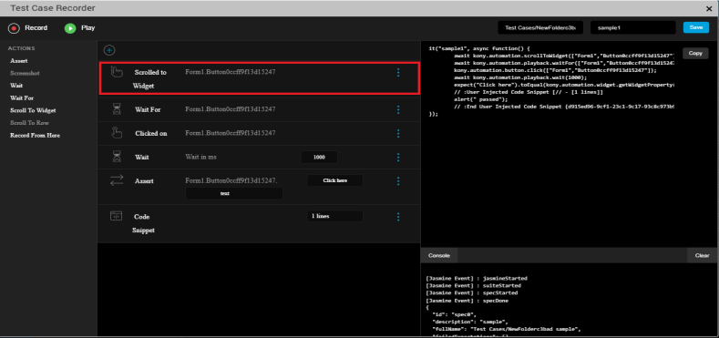
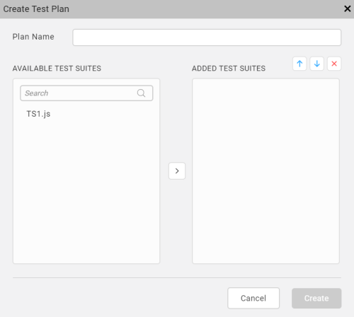

Jasmine Test Automation
From V9 onwards, Volt MX Irisintroduces the test automation feature using which you can leverage the capabilities of the Jasmine test framework to record activity on an application and generate test scripts. Further, you can edit the recorded test script by adding certain actions such as Wait, Assert, and Scroll to Widget. Once you configure the actions, you can run the generated test scripts using the Live Preview option in Iris on your system, or on a mobile device to test the application.
The following topics describe the tasks related to Jasmine automation in Volt MX Iris.
Create Test Resources
There are three types of test resources in Jasmine based on their hierarchy:

Test Case
Test Case is a test script that is written by a user or generated by recording the user's activity on the application.
The following topics cover some of the key tasks related to test cases.
Create a Test Case
You can create a test case by recording your activity on the app. The app must be previewed by using the Live Preview feature or launched on a device by using the Build and Publish feature. You can then record the user activity on the app to create a test case. Further, you can edit the recorded test case while or after creating the test case.
- Create a Test Case using Live Preview
- Create a Test Case using Build and Publish
- Create a Test Case using Dashboard
Create a Test Case using Live Preview
If you use the live preview feature to view your app, follow these steps to create a test case for the app:
-
In Iris, from the main menu, navigate to Build > Live Preview Settings.
The Live Preview Settings window appears.
-
Select the platforms and channels for which you want to build the application.
-
From the Preview Mode drop-down list, select the Test mode.
-
Click Save and Run.
The app launches on the device. The Iris Preview window appears. - In Iris, from the Project Explorer, go to Test Resources > Jasmine.
-
Expand the required < channel >, right-click on Test Cases or any of the sub folders and select Create a Test Case.
The Test Case Recorder window appears.
Note:
When you minimize the Test Case Recorder window, a View option appears in the Test tab on the lower pane of Iris. You can click View to re-open the window that you have minimized.
When you minimize the Test Case Recorder window while playing a test case, a progress bar appears in the Test tab indicating the progress of test case being played. Once the test case is played completely, a toast message appears on the lower-right of Iris.
After minimizing the Test Case Recorder window, a few options such as Edit, Delete, and Rename* are disabled for the test files. Also, the options to create a new Test Case, Test Suite, or Test Plan are disabled. -
Re-launch the application.
The device connects successfully.Note: If the device does not connect successfully, refer this FAQ.
-
On the upper-left corner of the window, select Record to start the recording.
Note: Any activity performed by a user on the application is recorded until the user clicks Stop.
-
After the recording starts, a stop option appears in the Test Case Recorder window. To discontinue the recording, click Stop.
You can now edit the test case to add more actions, if required. To know more about editing the test case, click here. - On the upper-right corner of the window, type a name for the test case and click Save.
The test case is created.
Create a Test Case using Build and Publish
If you want to connect to a native device instead of viewing the app using live preview, ensure that your system and the device on which you want to run the app are on the same network.
In this case, follow these steps to create a test case:
-
In Iris, from the main menu, navigate to Build > Build Native Local.
The Build Native Local window appears.
Note: The Build Native Local feature enables you to build an app on the local machine. To know more about the feature, click here. If you want to build the app on the cloud, select Build and Publish Native.
-
Select the platforms and channels for which you want to build the application.
-
From the Post Build Action drop-down menu, select Run on my Device.
-
From the Build Mode drop-down list, select the Test mode.
-
Click Build. The build generation begins. You can check the status of your build in the Build tab. If there are any errors, they appear in the Build tab.
Once the build is completed, the app is launched on the device.
-
In Iris, from the Project Explorer, go to Test Resources > Jasmine.
-
Expand the required < channel >, right-click on Test Cases or any of the sub folders and select Create a Test Case.
The Test Case Recorder window appears. Note:
When you minimize the Test Case Recorder window, a View option appears in the Test tab on the lower pane of Iris. You can click View* to re-open the window that you have minimized. For more information, click here. -
Re-launch the application.
The device connects successfully.Note: If the device does not connect successfully, refer this FAQ.
-
On the upper-left corner of the window, select Record to start the recording.
Note: Any activity performed by a user on the application is recorded until the user clicks Stop.
-
After the recording starts, a stop option appears in the Test Case Recorder window. To discontinue the recording, click Stop.
You can now edit the test case to add more actions, if required. To know more about editing the test case, click here. - On the upper-right corner of the window, type a name for the test case and click Save.
The test case is created.
To play the recorded script, re-launch the app and click Play. The recorded script plays in the Iris Preview window. You can view the result of the test case in the Console tab.
Note: When you copy the recorded test case and paste it on the test case folder or sub folder in any channel. The copied test case file behaves similarly to the recorded test case.
This behavior is not applicable for Test Suites and Test Plans.
Edit a Test Case
You can edit the test case to add certain actions without having to record from the device. For every activity that is recorded such as a button click or entering text, you can add several other actions before or after the activity in the Test Recorder. You can edit a test case in the following ways.
- Edit a Test Case Using Test Recorder
- Add a Timeout for a Test case Using Test Recorder
- Edit a Test Case Manually
Edit a Test Case Using Test Recorder
Using the Test Recorder, you can edit a test case while creating the test case or after the test case is created.
To edit a recorded test case, follow these steps:
- From the Project explorer, navigate to Test Resources > Jasmine > < channel >Â > Test Cases.
-
Right-click a test case and click Open in Test Recorder.
The Test Case Recorder window appears. -
Select any user activity that is recorded.

-
Click the add icon to add any of the following actions to the top of the canvas:
- Insert Code Snippet: Enter the code and description and click Save.
- Wait: Delays the selected action by specified period of time.
-
Fetch Widget Path: This action enables you to get the path of a widget in the application by selecting the widget. The application can be launched in the device, web browser, or in the Live Preview window. To get the path of any widget in the Test Recorder window, follow these steps.
- From the top-left of the Test Recorder window, click Record.
- From the top of the canvas, click the add icon, and select Fetch Widget Path .
- Select the required widget in the application.
A new node with the path of the widget is added to the canvas of the Test Recorder window. - To complete the Fetch Widget Path action, select any of the following actions from the left of the Test Recorder window as per your requirement: Wait For, Assert, and Scroll to Widget.
Note: In iOS platform, Fetch Widget Path action is not supported for FlexForm, FlexScrollContainer, and FlexContainer widgets.
Note: In Android platform, you cannot perform any scrolling actions after the Fetch Widget Path action is performed. You must perform the scrolling action before the Fetch Widget Path action.
-
From the Actions panel, select any of the following actions for the corresponding user activity.
- Assert: Validates the value of a specified property for any widget.
In Volt MX Iris V9 SP 2 GA, when you add an assert action in the Test Case Recorder window, you can view the link icon
 in the assert statement. Click the icon to view a list of options that you can use to customize the type of assertion to be applied on the specified property of the widget.
in the assert statement. Click the icon to view a list of options that you can use to customize the type of assertion to be applied on the specified property of the widget.This feature allows you to add custom matches for any test case that improves the test automation.
Prior to the V9 SP2 release, the default matcher was configured as expect(a).toEqual(b) and if a developer wanted to add a new match, they had to add the code manually.

The following types of Assertion options are available:
Important: When you toggle the button next to the Negative Assertion option to On, all the Assertion options turn into Negations.
-
The toBe matcher compares with ===.
-
The toEqual matcher works for simple literals and variables.
-
The toMatch matcher is for regular expression.
-
The toBeDefined matcher compares against an undefined value.
-
The toBeUndefined matcher compares against undefined.
-
The toBeNull matcher compares against a null value.
-
The toBeTruthy matcher performs boolean casting testing.
-
The toBeFalsy matcher performs boolean casting testing.
-
The toContain matcher finds an item in an Array and a substring.
-
The toBeLessThan matcher performs mathematical comparisons.
-
The toBeGreaterThan matcher performs mathematical comparisons.
-
The toThrow matcher tests whether a function throws an exception.
-
Screenshot: Takes a screen shot of the app on the device. This action is applicable on native applications only and not on Desktop web applications.
- Wait: Delays the next action for a specified period after the selected action is performed. The time period is in milliseconds.
- Wait For: This is applied to the widget involved in the selected user activity. Delays the selected action until the widget being awaited appears.
Note: In Volt MX Iris V9 SP 2 GA, on a new form, when a new action is performed, the Test Case Recorder automatically adds the Wait For statement to the recording.
- Scroll To Widget: Scrolls to a specified widget on the application.
- Scroll To Row: Scrolls to a specified row of the Segment widget.
- Record From Here: Starts the recording from the selected action in the recording.
- Fetch Widget Path: This action enables you to get the path of a widget in the application by selecting the widget. The application can be launched in the device, web browser, or in the Live Preview window.
To get the path of any widget in the Test Recorder window, follow these steps.- From the top-left of the Test Recorder window, click Record.
- From the left of the Test Recorder window, select Fetch Widget Path .
- Select the required widget in the application.
A new node with the path of the widget is added to the canvas of the Test Recorder window. - To complete the Fetch Widget Path action, select any of the following actions from the left of the Test Recorder window as per your requirement: Wait For, Assert, and Scroll to Widget.
Note: In iOS platform, Fetch Widget Path action is not supported for FlexForm, FlexScrollContainer, and FlexContainer widgets.
Note: In Android platform, you cannot perform any scrolling actions after the Fetch Widget Path action is performed. You must perform the scrolling action before the Fetch Widget Path action.
-
To open context menu for a recorded step in the canvas, click on the three dots corresponding to it:
- Insert Code Snippet: To add a code snippet after the selected action, click this option. Enter the code and description and click Save.
- Wait: To introduce a delay before the selected action, click this option. It delays the selected action by specified period of time.
- Edit: To edit the path of the widget (if applicable) in the current selection, click this option. Modify the widget path, and then click anywhere outside the box. If the step under consideration is a code snippet, then this option will expand the code snippet area.
- On the top-right corner of the Test Case Recorder window , click Save.
A new_ .js file will be created for the respective channel.
You have successfully edited the test case. To run the edited recording, click Play.
Add Timeout For a Test case
In Volt MX Iris V9 SP 2 onwards, a developer can configure the timeout for a test case in the Test Case Recorder window. Prior to the V9 SP2 release, a default timeout of five seconds (in the milliseconds unit, 5000 MS) was configured, and developers couldn't customize the timeout value.
Note: If the test case takes longer than the configured time, Jasmine interrupts the test case and the test case fails.
To add a timeout value for a Test Case, follow these steps:
- From the Project explorer, navigate to Test Resources > Jasmine > channel > Test Cases.
- Right-click a test case and click Open in Test Recorder.
The Test Case Recorder window appears. - Click the timeout
 icon.
icon. - Enter the timeout value. For example, 10000 MS.
By default, the timer is configured to 5000 MS. - Enter a name for the test case in Test Case Name .
The test case is automatically saved.

Edit a Test Case Manually
Further to the ability to change the test case using the Test Case Recorder window, you can also edit the recorded test scripts manually through code. Using the edit option, you can also modify the test scripts that are written manually.
To edit a test case manually, follow these steps:
- In Iris, from the Project explorer, navigate to Test Resources > Jasmine > < channel >Â > Test Cases.
- Right-click the test case that you want to edit manually.
-
Select Edit Test Case.
The corresponding JavaScript file opens in the Iris canvas.Important: Once you open a test case in this manner, for subsequent changes, you will not find this option. You can double-click the file directly from the Project explorer to open the file and make changes.
Note: If you open a test case JavaScript file by double-clicking it prior to using the Edit Test Case option, the file will open in the read-only mode.
-
Make the required changes to the JavaScript file.
-
Save the JavaScript file.
The changes are saved.Note: The read-only attribute of the test script is disabled.
You have successfully edited the test case. Once you edit a recorded test case, you can play the test script in the Test Case Recorder and view the test result.
To play the test case, use the Open in Test Recorder option for the same test case. The following Test Case Recorder window appears.

From the Test Case Recorder window, you can click Play to run the test case that has been edited manually.
You can also rename the test case, if required. The Record option is disabled by default when you edit manually.
Test Suite
Test Suite is a collection of several test cases. Create a test suite to group various test cases and run them in an order in which they are grouped.
The following topics describe how you can create and run a test suite.
Create a Test Suite
Follow these steps to create a test suite:
- From the Project explorer, go to Test Resources > Jasmine.
- Expand any channel, such as Mobile, and go to Test Suites.
-
Right-click on Test Suites and select Create a Test Suite. The Create Test Suite window appears.

-
From the available test cases, select the test cases that you want to add to the test suite.
- Drag and drop the selected test cases in the ADDED TEST CASES pane.
By using the up and down icons, you can change the sequence to the order in which you want the test cases to run.
If you want to remove a test case from the test suite, select the test case and click the delete icon. - Type a name in the Suite Name box and click Create.
A new < testSuite.js > file is created in the Test Suites folder.
You have successfully created a test suite. To edit the test suite, navigate to the Project explorer, right-click on the test suite and select Edit Test Suite. Once the modifications are done, click Save.
Run a Test Suite
After creating a test suite, run the test suite to play the all the test cases and test the application.
Follow these steps to run a test suite:
- From the Project explorer, navigate to Test Resources > Jasmine.
- Expand any < channel > and go to Test Suites.
- Select a < testSuite.js > file.
-
Right-click on the file and select Run.
The VoltMX Iris Test Suite Runner window appears.
The left pane of the window displays all the test cases in the specified test suite.
The right pane of the window displays the code in the order of the test cases. On selecting a test case from the left pane, the corresponding code on the right pane is highlighted.
The Console tab displays the results of the test.Note:
When you minimize the Test Suite Runner window, a View option appears in the Test tab on the lower pane of Iris. You can click View to re-open the window that you have minimized.
When you minimize the Test Suite Runner window while running a test suite, a progress bar appears in the Test tab indicating the progress of test suite that is running. Once the test suite is run completely, a toast message appears on the lower-right of Iris.
After minimizing the Test Suite Runner window, a few options such as Run, Edit, Delete, and Rename* are disabled for the test files. Also, the options to create a new Test Case, Test Suite, or Test Plan are disabled.Note: If you want to play all the test cases in the test suite, click Run on the upper-left corner of the Test Suite Runner window.
Test Plan
Test plan is a collection of several test suites. You can create a test plan to play various test suites that were created.
The following topics provide more information about how to create, edit, and invoke test plans.
Create a Test Plan
You can create a new test plan from the Project explorer. Once a test pan is created, a corresponding JavaScript file is created.
To create a new test plan, follow these steps:
- From the Project Explorer, go to Test Resources > Jasmine.
- Expand the channel where you created the test cases and test suites earlier.
-
Right-click on Test Plans and click Create a Test Plan.
The Create Test Plan window appears.
-
From the available test suites, select the test suites that you want to add to the test plan.
- Drag and drop the selected test suites under ADDED TEST SUITES.
By using the up and down arrow icons, you can change the sequence to the order in which you want the test suites to run.
If you want to remove a test suite from the test plan, select the test suite and click the delete icon. - Type a name in the Plan Name box and click Create.
The < PlanName.js > file is created in the Test Plans folder. - If you want to edit the test plan that you have created, right-click on the file and select Edit Test Plan.
Click Save after the modifications are made.
Modify the testPlan.js file
To enable testing in Iris, a default testPlan.js file is present in the Test Plan folder at Project >Â Test Resources > Mobile > Test Plans >Â testPlan.js. By using this file, you can run a test plan that you have created or run selected test suites directly. The testPlan.js file contains the following code:
//This is the entry point for automation. You can either:
//1.Require any one of the created test plans like this:
require([/*<Test Plans/ file>*/]);
// or
//2. Require the test suites along with executing jasmine as below
//Nested require for test suites will ensure the order of test suite exectuion
require([/*<Test Suites/test suite1>*/],function(){
require([/*<Test Suites/test suite2>*/], function(){
//and so on
require([/*<Test Suites/last test suite>*/], function(){
jasmine.getEnv().execute();
});
});
});
//Since this is file is to be manually edited, make sure to update
//any changes (rename/delete) to the test suites/plans.
You can modify and invoke the require function in the testPlan.js file in the following ways:
Invoke the require Function for Test Plan
While testing an application, you can create multiple test plans, but you can run only one test plan at a time. To run a specific test plan you must invoke the require function for the test plan.
Follow these steps to execute a test plan:
- From the Project Explorer, navigate to Test Resources > Jasmine> < Channel > > Test Plans
- From the Test Plans folder, open the
TestPlan.jsfile. - In the
TestPlan.jsfile, modify the default code in the following format.
```require([<Test Plans file>]);// Write the name of a test plan that you want to execute.``` 4. Save the file.
When the test plan is run next time, the plan defied by you in the previous step will be executed.
Invoke the require Function for Selected Test Suites
By modifying the testPlan.js file, you can also run a group of test suites, without creating a test plan explicitly. To run a group of test suites, you must invoke the require function for each test suite.
Follow these steps to invoke the require function for selected test suites:
- From the Project Explorer, navigate to Test Resources > Jasmine> < Channel > > Test Plans
-
From the Test Plans folder, open the
TestPlan.jsfile. -
In the
TestPlan.jsfile, modify the default code in the following format.
// Consider a test plan with three test suites:Â test suite1, test suite2, and test suite3
//Nested require for test suites will ensure the order of test suite exectuion
require(["Test Suites/<test suite1>"],function(){
require(["Test Suites/<test suite2>"], function(){
require(["<Test Suites/<test suite3>"], function(){
jasmine.getEnv().execute();
});
});
});
- Save the file.
When the test plan is run next time, the test suites defined by you in the previous step will be executed.
Volt MX Automator
Volt MX Automator is a one-stop shop where you can view the latest executed test cases. You can find more details about the time of execution of a test, channel on which a test is executed, and the test results. You can open the VoltMXAutomator window by clicking the following icon in the left navigation bar of Volt MX Iris.
You can view the last five tests executed on the Dashboard and the recorded test scripts, if you want. In addition, you can record a new test case from the Dashboard without having to navigate to the Test Resources folder in the Project explorer.
Using Dashboard, you can perform the following tasks:
- View the Testing History
- View the Recordings of the Executed Test Scripts
- Create a new Test Case using Dashboard
You can find the VoltMX Automator icon on the left navigation bar of Iris. Click the icon to open the Dashboard window.

View the Testing History
The Dashboard displays the information about the last five test results of the application. The latest tests that have executed can be test cases or test suites.
The Dashboard window displays the following details for each of the five tests that have been executed:
- Time stamp: The time at which the test was executed.
- Channel: The channel on which you ran a test case or test suite.
- Passed: The number of the test cases that ran successfully.
- Not Run: The number of ignored test cases that the user do not want to run.
- Failed: The number of test cases that failed due to errors.
-
Results: Click on the file to view the test results of each test suite.

The number of passed test cases, failed test cases, and pending test cases are displayed across each test suite. Furthermore, you can expand the test result of each test suite to view more information such as: * Spec description: Displays the name of the test case. * Failed exceptions: Displays the location of errors in the test case along with the file location.
In Volt MX Iris V9 SP 2 , in the Results window, when you click View Details option, details of failed expectations appear. Details include the name of the test case, code line number, column number, jasmine message, stack trace, and the associated screen-shot of the failure. When you click on the screen shot, the image maximizes.

- Execution Time: Displays the time taken by a test case for completing the execution.
View the Recording of an Executed Test Script
In the Dashboard window, a play icon is displayed for each of the latest five tests that have been executed.
You can click the play icon to run the recorded test script.
Create a New Test Case using Dashboard
Using Dashboard, you can start recording a new test script directly from the Dashboard window, without having to create a test case from the Project explorer.
To create a new test case from the Dashboard window, follow these steps:
-
From the main menu, click Build > Live Preview Settings.
-
In the Platform and Channels section, select the appropriate checkboxes.
For the Preview Mode, select Test.
-
Click Save and Run.
The app launches on the device. In case of Inline preview, the Iris Preview window appears.
-
From the left navigation bar of Iris, click the VoltMX Automator icon.
The Dashboard window appears. - In the upper-right corner of the window, click Start New.
The Test Case Recorder window appears. -
From the Iris Preview window, re-launch the application.
The device connects successfully. -
On the upper right corner of the Test Case Recorder window, select the channel for which you want to create the test case.
-
On the upper-left corner of the Test Case Recorder window, select Record to start recording a test script.
After the recording starts, a stop option appears. -
To discontinue the recording, click Stop.
-
On the upper-right corner of the window, type a name for the test case and click Save.
-
To play the recorded script, re-launch the app and click Play.
The recorded script plays in the Iris Preview window.
You can view the result of the test case in the Console tab.
Deploy the Test Resources
A testPlan.js file is present for each channel and is executed when the app is launched without opening the test recorder. After the test scripts are generated, deploy the test resources to retrieve the test scripts from the server and test the application.
To deploy your application, follow these steps:
- In Iris, from the Project explorer, go to Test Resources > Jasmine.
- Right-click on Jasmine and select Deploy.
The results of the deployment will be available in the HTML format (with the TestResult_dd-mm-yyyy_hh-mm-ss.html nomenclature), in the following locations based on the platform.
| Platform | Test Result Location |
|---|---|
| Responsive Web | Downloads |
| Android | /sdcard/Android/data/ |
| iOS | App data directory/ JasmineTestResults |
| Windows | App data directory/ JasmineTestResults |
Note: On the Android and iOS platforms, after each Jasmine callback (Spec Done, Suite Done, Jasmine Done) is executed, the results override the results from the preceding stage. This ensures that there are no missing reports in case the app crashes during a callback execution.
For more information on queries about Jasmine Test automation, refer FAQs.